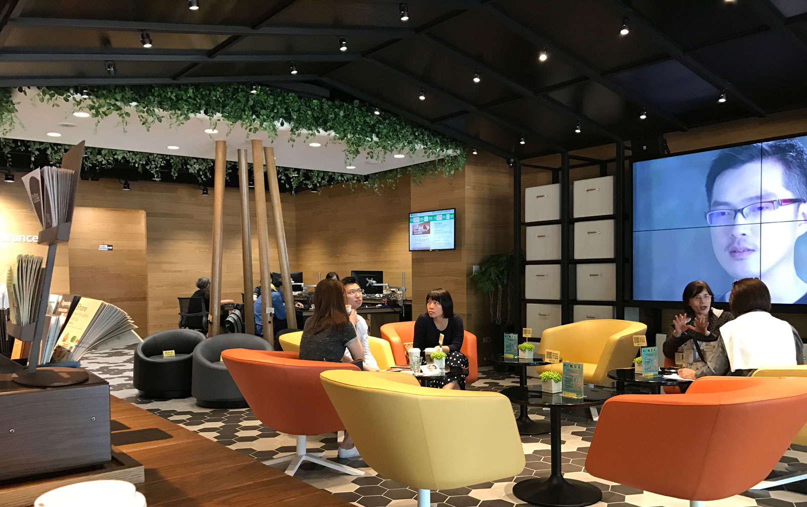
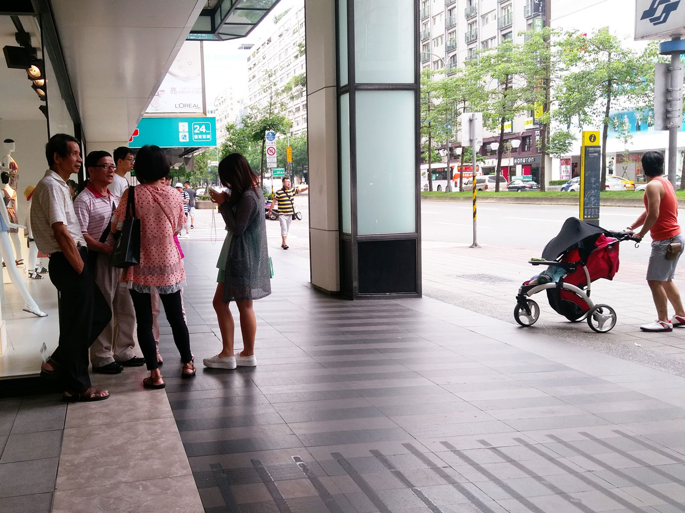
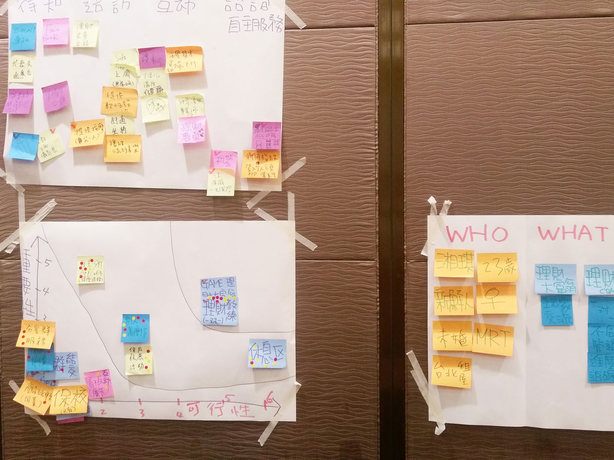
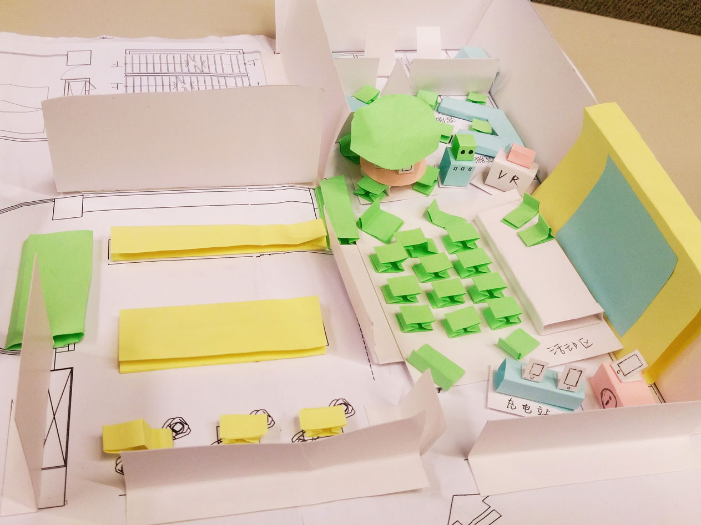
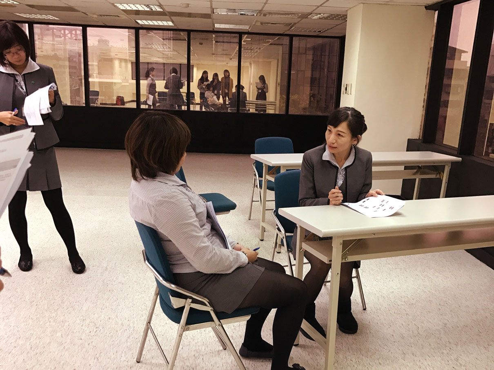
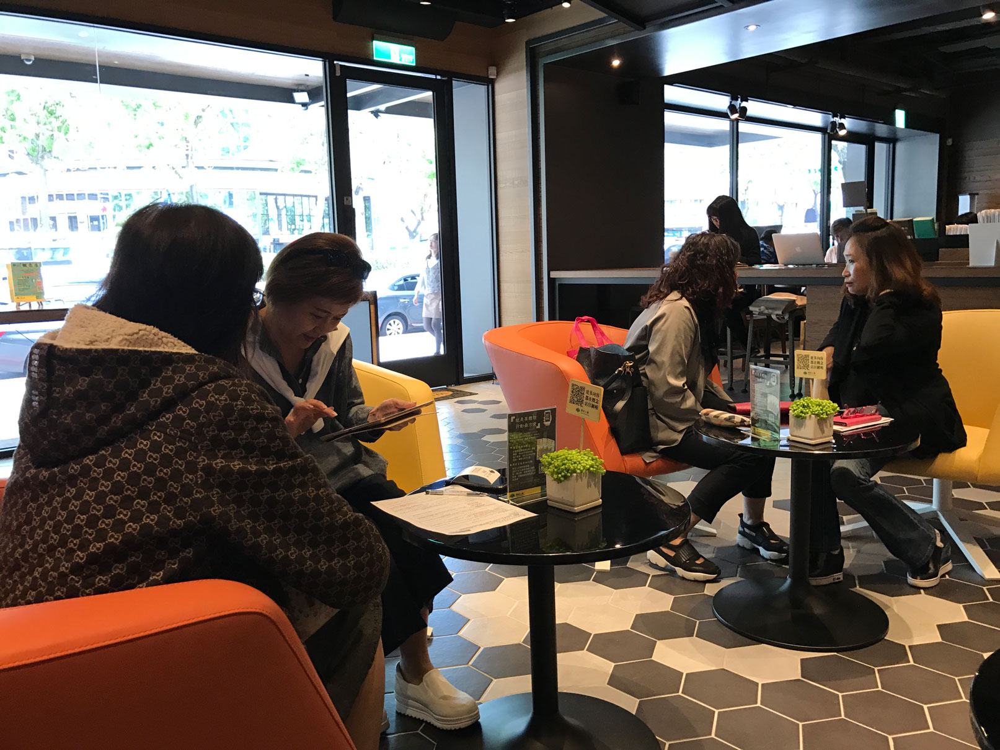
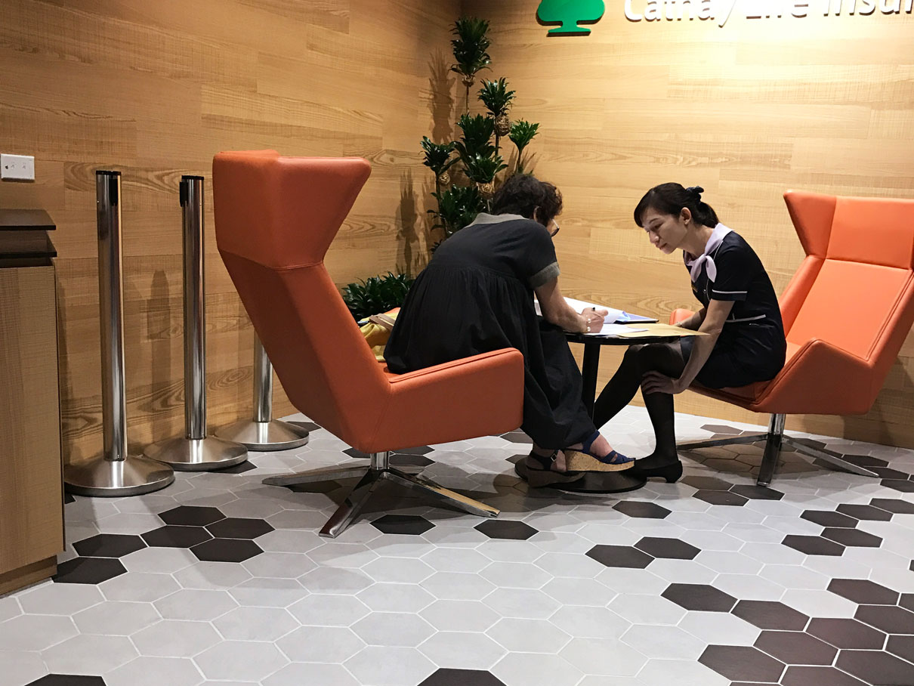

Customer Experience Center
A Taiwanese life insurance company set out to design its first-ever concept store — an in-person experience space aimed at attracting new customers through innovation rather than traditional sales tactics. The project required starting from scratch: conducting field research, co-creating in-store experience scenarios with the client team, and translating findings into service design, digital prototypes, and staff training. As the first concept store of its kind in Taiwan, the project demanded both rigorous research and hands-on design execution.
I took on dual responsibility as UX researcher and designer — developing the research plan, leading field study and in-depth interviews, facilitating design thinking workshops with the client team, and designing the service interaction flow for the store.
— UX Researcher, UX Designer
- Contextual Inquiry
- Field Study
- Design Thinking Workshop
- Wireframing
- Service Design
- Lo-fi prototype
Approach

Step 1. Field Study & User Research
I conducted 10 street interviews and 6 in-depth interviews to build a grounded understanding of how people interact with financial services and what would draw them into a concept store environment. Using contextual inquiry methodology, the team synthesized findings into distinct user scenarios for different target audience segments — establishing the research foundation that shaped the store's experience design direction.

Step 2. Design Thinking Workshop
The next thing we did is to host the design-thinking workshop in order to work together with our clients to bring out the solutions that fit different kind of our users and defining the “Hills” of the project core team. Within this stage, our client and I worked closely. I always remembered to hear their voice and put respect to them in order to know our client’s real needs.

Step 3. Solution Design & Prototyping
With the target audience defined and the experience Hills aligned, I designed the interaction flow for the store's digital touchpoints and built prototypes for both the website and in-store tablet interface. The prototypes were developed iteratively, with each version reviewed against user research findings to ensure the digital experiences supported — rather than disrupted — the in-store journey.

Step 4. Service Design & Experience Mapping
Beyond the digital interfaces, I applied service design principles to map and refine the full in-store experience — from the moment a visitor arrived to every staff interaction and digital touchpoint along the way. Service blueprints were used to ensure each touchpoint was intentional, coherent, and designed to reduce friction for both visitors and store staff.

Step 5. Service Flow Testing & Staff Training
Like the old saying-- “Practice makes perfect.” My team and I keep testing the service flow before the grand opening date and even helped our clients developing their staff training principles.
Result
20
Street Interviews
6
In-depth Interviews
5
Staff Training Sessions

The concept store opened in April 2017 — the first of its kind for a life insurance company in Taiwan. The project demonstrated the value of research-led, co-created service design, delivering an experience that aligned visitor needs with the company's business objectives. Research findings, service blueprints, and digital prototypes were handed off to the client team along with the training materials needed to sustain the experience after launch.